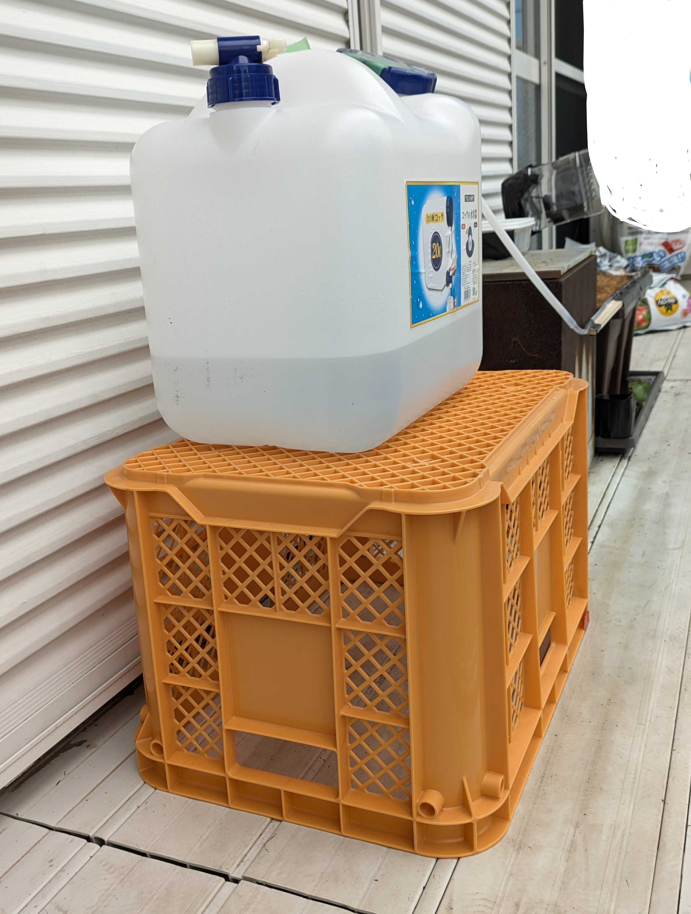
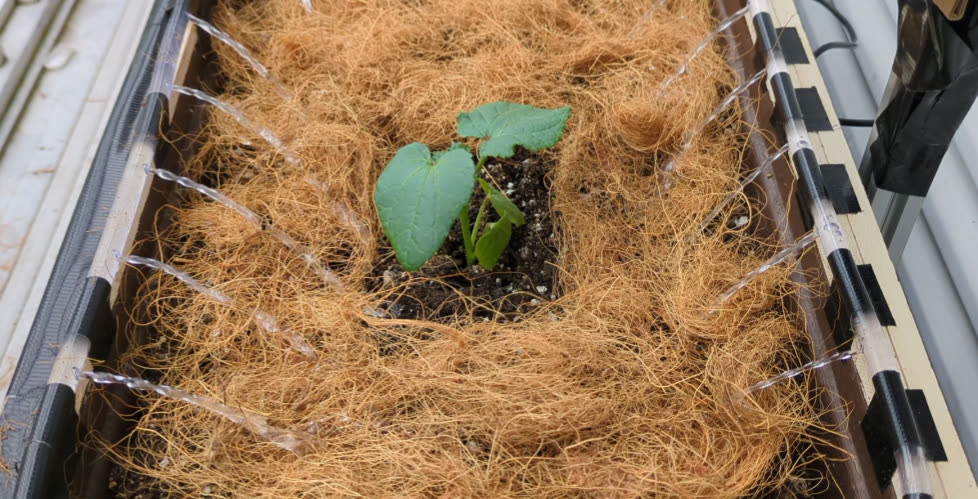
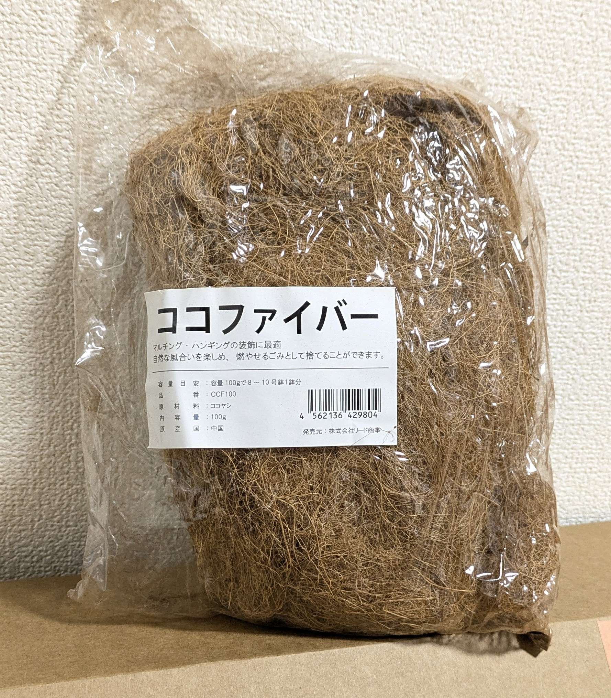
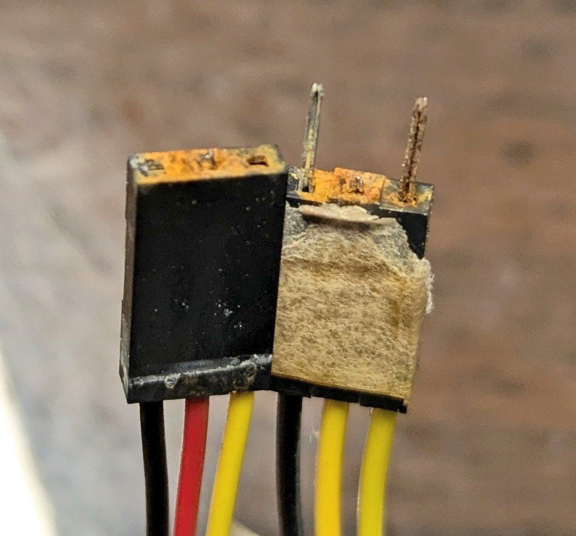

タンクを高く置いたら水が止まらなかった
水の勢いを上げるつもりでタンクをプランターより高く置いたところ、サイフォン効果で水が流れ続け、10Lほど入っていたタンクが空になってしまいました。
所属実験 第3回 島オクラ栽培実験
Experiment Record
島オクラ2株の定植から、センサー観察とOpenClawによる水やり支援までを記録する夏の栽培実験
2026年6月20日から始めた、島オクラの栽培記録です。今回はプランターの土作りからやり直し、発酵牛糞、パーライト、培養土を混ぜて、島オクラのポット苗を2株定植しました。
この実験では、気温、照度、土壌水分などの観察に加えて、OpenClawが実際の水やり作業を手伝います。しばらくは人が水やりのタイミングを相談し、OpenClawが散水を実行する形で、現場の感覚とセンサーの数字を少しずつつないでいきます。
Posts

水の勢いを上げるつもりでタンクをプランターより高く置いたところ、サイフォン効果で水が流れ続け、10Lほど入っていたタンクが空になってしまいました。
所属実験 第3回 島オクラ栽培実験

島オクラの株元まわりにココファイバーを敷き、8秒の散水テストで土を削らずに水を入れられました。一方で、気温湿度センサーと土壌水分計の不調から、屋外配線のサビと接触不良が見えてきました。
所属実験 第3回 島オクラ栽培実験

水やりの泥はね対策として、稲わらの代わりにココファイバーを試してみることにしました。明るい朝に薄く敷いて、土の湿り方を見ながら水やりを調整します。
所属実験 第3回 島オクラ栽培実験
画像はまだありません。次回の観察写真をここに追加できます。
定植直後の島オクラについて、写真で見た生育ステージ、土壌水分、住んでいる近くの2週間予報を合わせて、この先の伸び方を予測してみました。
所属実験 第3回 島オクラ栽培実験

遠隔水やりを試してみると、水圧が強くて土の表面を削ってしまうことが分かりました。泥はねによる病気リスクも考えて、散水方法と表土カバーを見直すことにしました。
所属実験 第3回 島オクラ栽培実験

2026年6月20日、島オクラ2株を定植しました。今回は土作りだけでなく、OpenClawがチャットから10秒間の水やりを実行できるようになり、現実の農作業を手伝う第3回実験が始まりました。
所属実験 第3回 島オクラ栽培実験
Gallery
